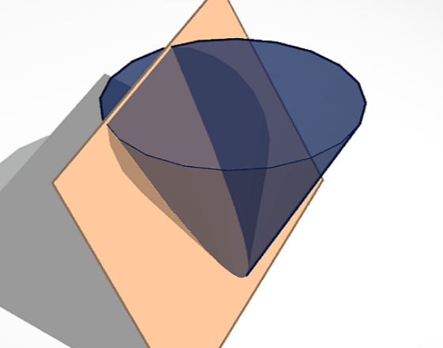
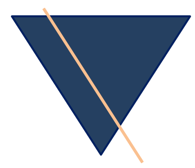
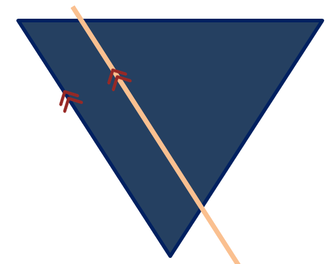
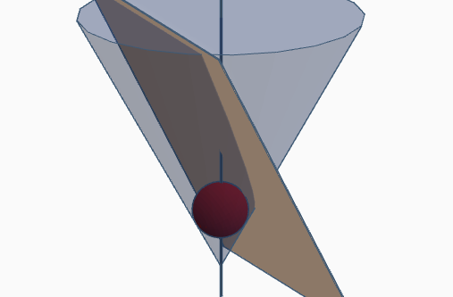
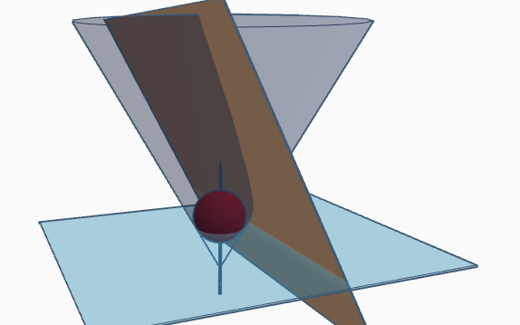
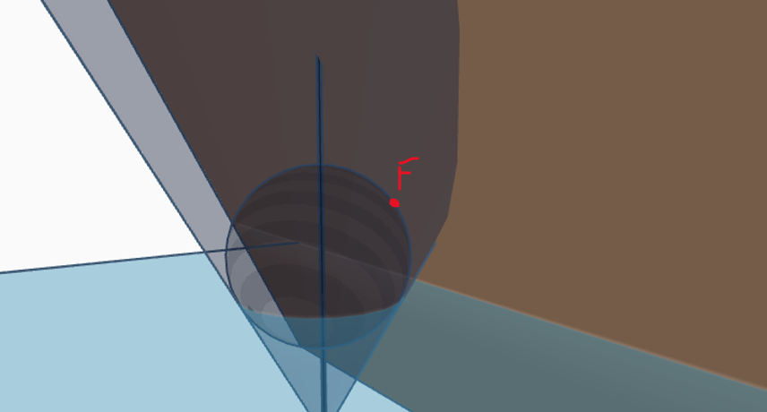
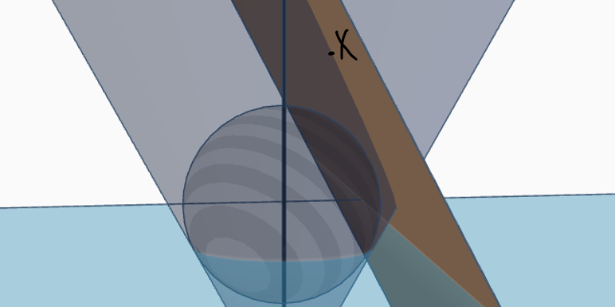
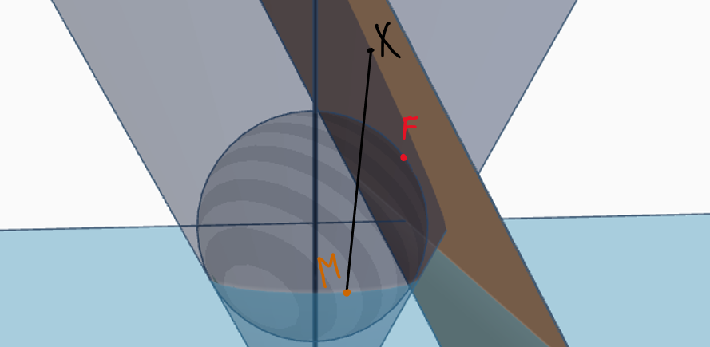
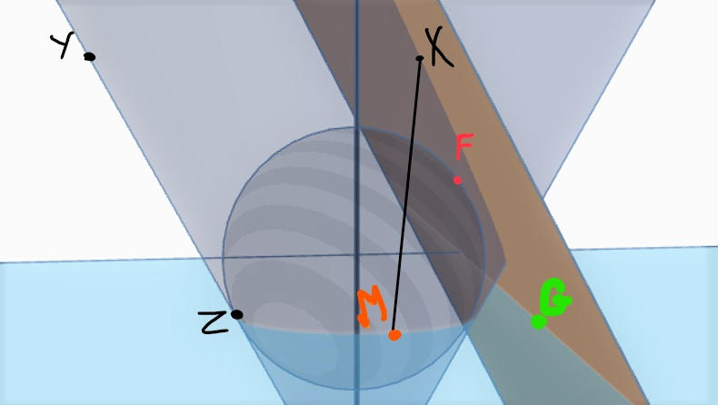

Here I have a cone and a plane P intersecting it:
Here is a 2D view perpendicular to P:
The plane P is parallel to the cone's surface:
Let there be a sphere S inside the cone such it touches the plane P at one point. This sphere is tangent to both the cone and the plane P:
Let plane B be a plane where the sphere touches the cone:
Let point F be the point at which the sphere is touching plane P:
Choose a random point X on the intersection:
Draw a line from X along the cone directly down to plane B, touching the sphere. Let's call that point M:
Line XM is the shortest path on the cone from X to a point that touches both the sphere and plane B, and since it lies on the cone, that means it's a tangent to the sphere. If we draw a line from X to F, then that line will also be tangent to the sphere, since plane P touches the sphere at one point, and that point being F. Since two tangents meeting at the same point would be equal in length, then XF = XM. We can say that for any value of X, if we choose any random point X from the intersection, and draw a line to a point M, such that XM is the shortest path on the cone that's from X to a point that touches both the sphere and plane B, then XF = XM. We will now define the last three points, Y, Z and G:
Y is a point such that a plane on YX would be parallel to B, and it lies on the line of the cone that is parallel to P. Z is a point such that it lies on the intersection of the sphere and plane B, and that line YZ would be the shortest line on the cone from Y to the plane B. Note that the line YZ is parallel to P. Lastly, point G lies on the intersection of planes B and P. It is a point such that XG would be the shortest line on P from X to plane B. Since XM and YZ are tangents from the same cone, we can conclude:
Since XG is parallel to YZ, we can conclude:
Thus, we have shown that XG = XF. No matter what X we choose, F will remain the same, while G could change but will always lie on the line that is the intersection of planes P and B. With that line as the directrix, and point F as the focus, we can say that the intersection of the plane P and the cone is a parabola.